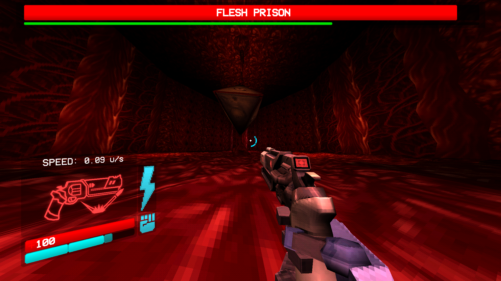
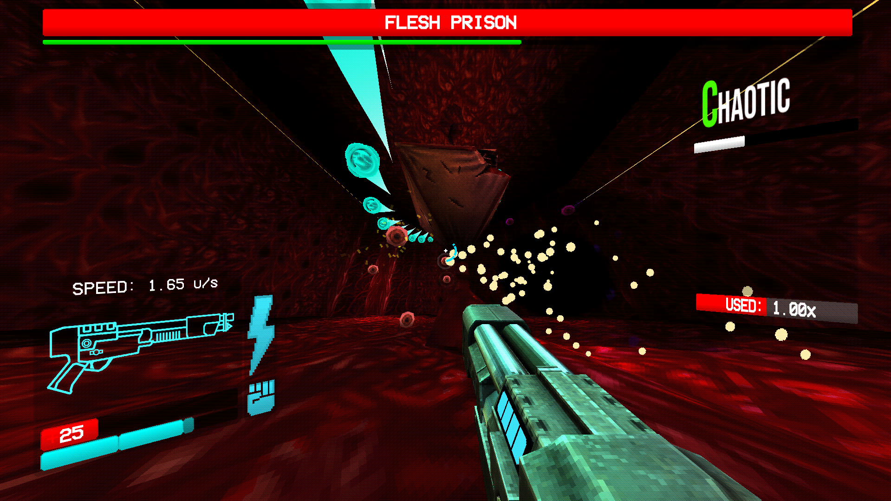
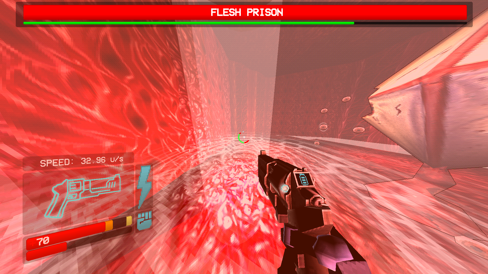
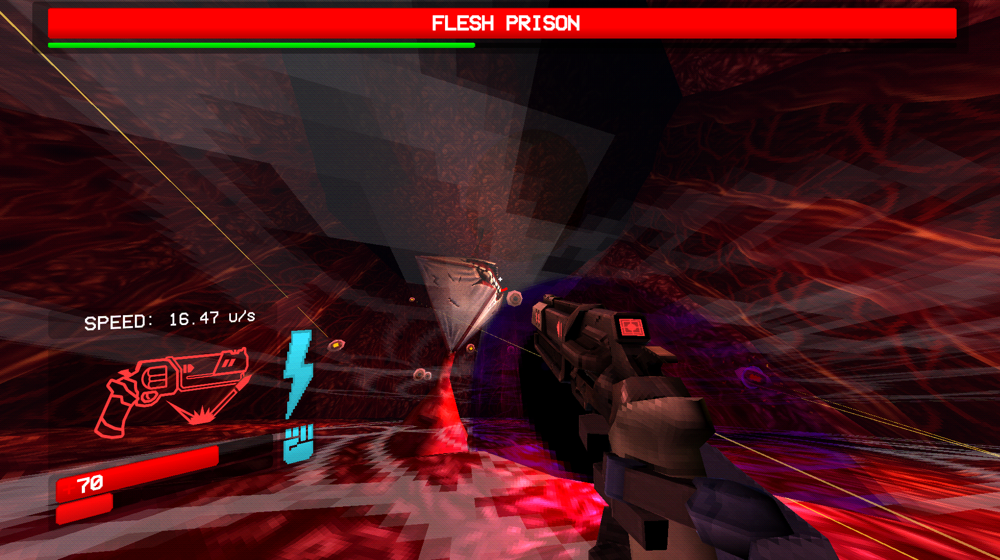
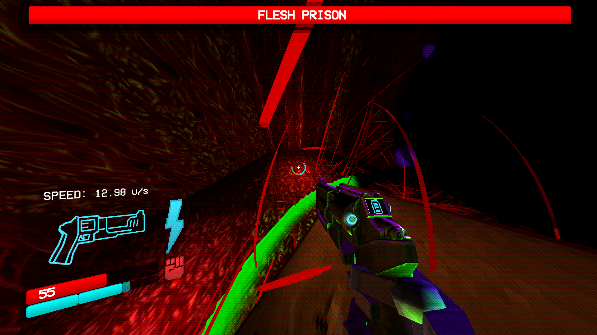

The Flesh Prison is a grotesque, octahedral boss suspended by tendrils. Its sides feature stitched skin and ominous eyes, with a corner replaced by a sinister, grinning mouth. It uses organic elements to embody ULTRAKILL’s horror aesthetic.
Rapidly fires 50 (75 in Phase 2) homing orbs. Parrying is possible but risky due to their speed and number. Positioning underneath the boss is safest.
Creates light circles that explode into predictive beams. Requires slide-hopping or dashing to evade effectively.
Summons a slow-moving sphere that reduces health to 1 if it detonates. Circle-strafe to avoid it.
The Flesh Prison summons eyeball minions (and Malicious Faces on higher difficulties) that fire beams. Clearing these quickly is essential to prevent healing.
Use the Malicious Railcannon or Revolver Marksman for quick elimination.
Focus on shotgun swapping and Sawblade Launcher tricks for sustained damage.
Stay directly below or above the Flesh Prison to minimize exposure to attacks.
Upon defeating the Flesh Prison, it will explode in a violent burst, and Minos Prime will be freed from its constraints. Minos Prime is a formidable foe with unmatched agility and power, ready to challenge your skills.